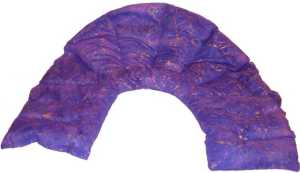

Hye Massage is owned and operated by Michele Mnatzakanian. A licensed and certified massage therapist from Potomac Massage Therapy Institute (PMTI) in Washington, DC, a national leader in massage therapy training.
Package of three massages 60 minute sessions: $200
Package of six massages 30 minute sessions: $270
Gift certificates
Celebrate special occasions or just show that you care by treating your friends and loved ones with a gift of relaxation and wellness! Gift certificates available.
Cancellation Policy
Your appointment time has been especially reserved for you. In the event you cannot make your appointment, we kindly request you give 24 hours notice, otherwise you will be charged the full rate for the missed appointment.
Flex Spending Account
We have found most Flex Spending accounts will allow you to use pre-tax dollars to pay for massages. Check with your company representative to see if you qualify.
Swedish/Deep Tissue
Massage therapy is always approached by moving from the superficial to the deeper layers of the muscle tissue and from more broad to more specific areas. The superficial layers must be warmed and softened first in order to access the deeper layers. Swedish massage addresses the more superficial tissue layers. Commonly referred to as "relaxation massage," Swedish massage involves gentle strokes that include gliding, kneading, tapping, stretching, rocking, and still touch. This type of massage promotes circulation, relaxation, stress reduction, and general well being. Deep tissue massage addresses the deeper tissue layers. It involves slower, more focused and penetrating strokes including deep glides, compressions, and cross-fiber friction. Deep tissue work is especially helpful for those who need relief for persistent areas of muscle tension, soreness, spasms, or "knots" related to posture, stress, or physical over-activity. When muscles are stressed, the flow of oxygen and nutrients becomes blocked, leading to inflammation and a buildup of toxins in the muscle tissue. Deep tissue massage helps to loosen the tissue by un-sticking the muscle fibers. Proper circulation is then restored. Toxins are flushed out of the tissue and replaced by a fresh blood supply carrying oxygen and nutrients. Swedish and deep tissue techniques are often combined in a full-body massage.
Healing Stone Massage
Experience the benefits of this ancient art of therapeutic massage. Several techniques-Swedish, Deep Tissue, and Trigger Point Therapy-are blended in combination with deeply penetrating hot and/or cold stones to bring about certain healing responses.
Relaxing massage ...
Water-heated smooth basalt stones are used in combination with aromatherapy essential oils and various massage techniques to effectively relieve stress and tension and to relax your mind and body at its deepest level. Hot stone massage induces a state of deep relaxation, softens and relaxes muscles, improves blood circulation, relieves pain in muscles and joints, and creates a feeling of well being and peacefulness.
Deep tissue massage ...
Hot and cold stones are used in combination with various massage techniques to address deep-seated tension. Deep tissue stone massage addresses the superficial tissue and the deeper, underlying sore areas. The cold stones serve to break up and release toxins trapped in the tissue. The hot stones then pave the way for a newly oxygenated blood supply to replace the cellular waste products. This increase in circulation can aid in healing.
Pregnancy Massage
Pregnancy is a time of massive change in a woman’s body: physical, mental, and emotional. Massage enhances circulation, which supports the work of your heart and increases the oxygen and nutrients delivered to your baby. It helps with reducing stress, promoting relaxation, and improving the quality of sleep. Pregnancy massage can also aid with the common discomforts of pregnancy, such as backaches, stiff neck, headaches, swelling, muscle fatigue, muscle and joint strain, and heaviness and aching in your legs caused by swelling.
Reflexology
Reflexology is the physical act of applying pressure to the feet and hand with specific thumb, finger and hand techniques. It is based on a system of zones and reflex areas that reflect an image of the body on the feet and hands with a premise that such work effects a physical change to the body.
Seated Massage
Seated massage is performed on a specially designed, portable chair that is quick and easy to set up almost anywhere. The chair allows maximum comfort for the client and provides me with easy access to common areas of tension such as the head, neck, shoulders, back, arms, and hands. Massage is given while the client is fully clothed. Sessions can last anywhere from 5 to 20+ minutes per recipient. I provide seated massage at parties, wedding and baby showers, schools, health and wellness fairs, company picnics, offices, sporting events, healthfairs, and more. Common benefits of chair massage include relaxation and relief from stress, aches and pains, muscle tension, headaches, and fatigue.
AIS (Active Isolated Stretching)
AIS was named and developed by a man named Aaron Mattes, who has had a long history of using this stretching technique on his clients and teaching it to thousands of health practitioners over many years. The reason why some practitioners promote AIS over conventional stretching is this: conventional stretching attempts to stretch muscles when they are not fully relaxed; AIS aims to stretch muscles when they are maximally relaxed, providing for effective stretches with low risk of injury. Stretching opens space in the joints, increases range-of-motion, and supports energy flow.
Under Construction
Neck Wraps - $27

Safe, portable and non-electric
Affordable and handmade in USA
Great for stress relief, cramps, chronic pain, stiffness, muscle fatigue, headaches
Use for fibromyalgia, arthritis, carpal tunnel, repetitive stress, muscle spasms
Ideal for neck, shoulder, upper & lower back pain & discomfort
Designed to the contour of the neck, shoulders, upper & lower back
Chill wrap to assist with swelling, bruising, new & recent injuries and fevers
For heat therapy, warm in microwave for 2-3 minutes, depending on desired warmth. Light misting of the herbal pack will offer a soothing moist heat. Cold therapy can be achieved by putting the wrap in a plastic bag and placing in the freezer for 1-2 hours.
Shipping: $8.00
Select a design on the right to see more details and place an order.
Michele Mnatzakanian is a licensed and certified massage therapist from the Potomac Massage Therapy Institute (PMTI) in Washington, DC, a national leader in massage therapy training. Additionally, she has received extensive training in both Swedish and Deep Tissue massage, and has attended classes in the areas of anatomy, physiology and kinesiology. Since graduating from PMTI she's taken additional classes in pregnancy therapy, reflexology, oncology massage, reiki, hot stone massage, sports massage and active isolated stretching. Through continued education and practice, she holds a professional membership with the American Massage Therapy Association. She has an extensive background working in a variety of environments including physical therapy & wellness center, hospital, fitness center, spa and workplaces.
Education & Credentials
Graduate of Potomac Massage Training Institute Washington DC
Trained in Swedish, deep tissue, hot stone massage, Certified in Bodywork for the Childbearing Year®
Professional member of the American Massage Therapy Association (AMTA)
Nationally Certified in Therapeutic Massage and Bodywork (NCTMB)
Maryland state licensed massage therapist, License # M03107
Over 200 hours of continuing education credits including: hot stone massage, massage for people with special needs, pregnancy massage, reflexology, AIS (active isolated stretching), Thai on the Table, Myofascial therapy and oncology massage, and hospice massage care.
American Heart training in CPR and first aid
BA degree Siena Heights University in Michigan
See what other people are saying about Michele and Hye Massage...
"After every session with Michele, I feel a strong sense of relief from muscle soreness. Since I am a very active person, there are times when I am held back by stiffness and overworked muscles. I worry less about these incidents because I trust Michele will get me back, better than ever. It is especially helpful that she works on the problem areas as needed and speeds up the recovery process. "
-Chad
"It has been a great experience coming to Michele for massage therapy. Because of my injuries, I wasn't able to lie on my stomach. Michele accommodated my needs with side bolsters and pillows, in addition to seated massages. Michele is compassionate and thoughtful. Even though my injuries have healed, I will continue using her as a massage therapist!"
-Sara K.
"Michele is an outstanding massage therapist who really cares about her client's well-being. Michele adjusts her technique to fit the individual's needs and ensures that you get the most from your time with her. Michele constantly attends workshops and seminars to improve her skills and to expand her knowledge in massage therapy; particularly in the area of working with cancer patients and survivors. I highly recommend Michele as a massage therapist. "
-Debbie Bambrick
"Thank you Michele, I use my therapy wrap multiple times a day, they are wonderful! I am also getting some for Christmas presents. I have been sending some folks I work with your way also, we will keep coming! "
-Gerbeca, Michigan
"Thank you once again for the heat wrap. As a new mom, I have to tell you I have been using the heat wrap everyday. It helps tremendously around my neck but I have also been warming it and putting it on my chest as my milk has come in to ease some of the pain and engorgement. It has been a lifesaver. So thank you again! "
-Cyndi P., Fort Worth, TX
"Since retiring, I’ve dramatically picked up the level of my recreational activities, particularly biking, and had been plagued with corresponding chronic aches and pains. I haven’t had a massage in years but since beginning a scheduled program of massage therapy with Michele, I have an increased level of muscular flexibility that has definitely helped improve performance. I’ve found the massage therapy to be more effective then NSAID in relieving muscular discomfort, and it’s been especially helpful on those occasions where I had localized pain in my lower back and quads. In addition to all my other comments, let me add that it is just totally relaxing"
- Denis Mackey
"Your neck wrap helped to save me from surgery! I had severe neck pain, had an MRI and found a problem with the way my discs were sitting in my neck C4-C5. Saw the surgeon and he said I could hold off until the pain became unbearable. I started on Motrin and using your Steeler neck wrap on my way to work, at work, and at bedtime. It has now been probably 3 months, I have full range of motion in my neck, and the pain is minimal. I will continue to use your wrap. At work my staff is constantly asking me to use the wrap for aches and pains. My son has a lower back basketball injury and constantly uses the wrap on his lower back. He is 17 and asks me to heat it up for him. Best device ever, would recommend it to anyone."
- Diane Hester, Pennsylvania